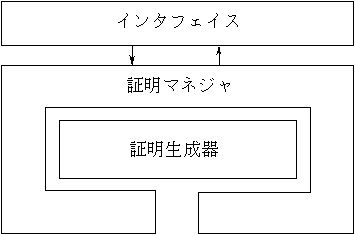

マ シ ン：Multi-PSI 環 境：PIMOS, SIMPOS 言 語：KL1, ESP ソース量：1 MB 文 書：マニュアル (日本語／英語)

基本的な証明手続きは、与えられた拡張確定節Ｆを初期ゴールとし、Prologの 通常の実行や "Negation as Failure" 規則などに似た五つの推論規則を用い て各ゴールからの新たなサブゴールの生成を繰り返す。生成されたゴールが全 てtrueになると、最初に与えられたＦがプログラムＰの最小Herbrandモデルに おいて成り立つことが示されたことになる。基本的な証明手続きでは、推論規 則の適用は非決定的であるために、証明の探索空間が非常に大きい。我々の実 際の証明手続きでは、与えられた拡張確定節の中に現れる述語の再帰パターン の整合性が解析され、五つの推論規則をどの順にどの部分に適用するかを示す "帰納証明プラン" がつくられる。証明の主要な部分は、この帰納的証明プラ ンに従ってなされるため、証明の探索空間が非常に縮小される。また、複数の 帰納的証明プランがつくられる場合は、それらの帰納的証明プランに従った証 明が並列に探索される。